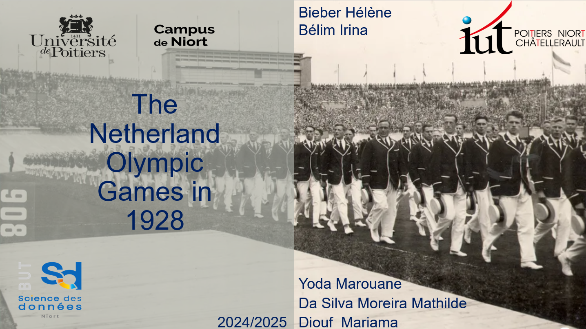

Présentation en anglais d'un territoire économique et culturel
Le but était de créer une présentation sur le territoire économique et culturel des Jeux Olympiques d'Amsterdam en 1928, en langue anglaise. Cette présentation avait pour objectif d'effectuer une analyse de la dimension géographique, culturelle et économique de la dynamique du sujet.
Technologies employées : Power Point & Word
Compétence :